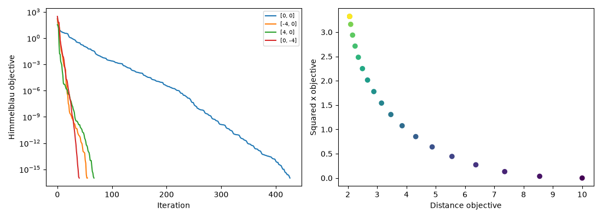

ABHINAV TANWAR · PYTHON ANALYSIS
Numerical Optimization Lab
Constrained extrema, trust regions, conjugate gradients, and Pareto tradeoffs.
Scope and methods
Consolidates related numerical-method sections rather than presenting every exercise as a different product. Scalar and separable box extrema are certified by enumerating stationary and boundary candidates. Constrained projection includes a feasibility residual. Rosenbrock trust-region runs record optimizer status and gradient norms. Linear conjugate gradient checks symmetric positive-definite inputs and reports residuals and conditioning on Hilbert systems; a small residual alone does not establish an accurate solution. Nonlinear Fletcher–Reeves uses bounded backtracking and descent restarts. Weighted-sum Pareto points are candidates, not a claim that every Pareto solution was recovered.
Measured results
| Calculated measure | Value |
|---|---|
| scalar global / x | -1.606 |
| scalar global / objective | -19.09 |
| constrained projection / objective | 3.365 |
| constrained projection / max violation | 7.772e-15 |
| hilbert systems / 5 / iterations | 7 |
| hilbert systems / 5 / condition number | 4.766e+05 |
| hilbert systems / 5 / relative residual | 2.349e-12 |
| hilbert systems / 8 / iterations | 23 |
| hilbert systems / 8 / condition number | 1.526e+10 |
| hilbert systems / 8 / relative residual | 1.084e-11 |
| hilbert systems / 12 / iterations | 1,387 |
| hilbert systems / 12 / condition number | 1.719e+16 |
| hilbert systems / 12 / relative residual | 6.054e-08 |
Convergence Tradeoffs

Full result structure
{
"scalar_global": {
"x": -1.6055696766393135,
"objective": -19.09344719019783,
"candidates": [
-3.0,
3.0,
-1.6055696766393135,
1.5555195260365493,
0.05005015060276373
]
},
"box_global": {
"minimum": [
-0.5,
3.0,
-118.375
],
"maximum": [
3.0,
-0.05,
140.025
]
},
"constrained_projection": {
"point": [
0.2896238961062687,
1.6631297934083045
],
"objective": 3.36512753967644,
"max_violation": 7.771561172376096e-15
},
"trust_regions": [
{
"start": [
0,
-1
],
"point": [
0.9999999999999969,
0.9999999999999937
],
"objective": 1.0896141253365226e-29,
"gradient_norm": 4.4177391044704896e-14,
"success": true
},
{
"start": [
0,
0.5
],
"point": [
0.9999999999999948,
0.9999999999999896
],
"objective": 2.7228027181768986e-29,
"gradient_norm": 1.0436096431476471e-14,
"success": true
},
{
"start": [
-1.2,
1
],
"point": [
0.9999999999999261,
0.9999999999997595
],
"objective": 8.62806211982294e-25,
"gradient_norm": 4.127645323829004e-11,
"success": true
}
],
"hilbert_systems": {
"5": {
"iterations": 7,
"condition_number": 476607.25024258613,
"relative_residual": 2.3488182846901772e-12
},
"8": {
"iterations": 23,
"condition_number": 15257576109.216072,
"relative_residual": 1.0837880188603762e-11
},
"12": {
"iterations": 1387,
"condition_number": 1.7192889378684084e+16,
"relative_residual": 6.053835530950882e-08
}
},
"nonlinear_cg": [
{
"start": [
0,
0
],
"point": [
3.0000000000751093,
2.0000000019144037
],
"objective": 6.53885363210907e-17,
"gradient_norm": 7.973060310120116e-08,
"iterations": 426
},
{
"start": [
-4,
0
],
"point": [
3.5844283409694264,
-1.848126526404132
],
"objective": 2.8477377108298316e-17,
"gradient_norm": 7.385141224464509e-08,
"iterations": 55
},
{
"start": [
4,
0
],
"point": [
3.5844283397451324,
-1.8481265255880865
],
"objective": 4.0130742262419144e-17,
"gradient_norm": 6.323178759561006e-08,
"iterations": 67
},
{
"start": [
0,
-4
],
"point": [
-2.8051180877700226,
3.131312517662812
],
"objective": 3.621273578768723e-17,
"gradient_norm": 7.23675103046387e-08,
"iterations": 40
}
],
"pareto_candidates": "21 values; see metrics.json for full data",
"scope": "Ill-conditioned residual convergence does not guarantee accurate solutions. Weighted sums do not recover every Pareto point in general."
}